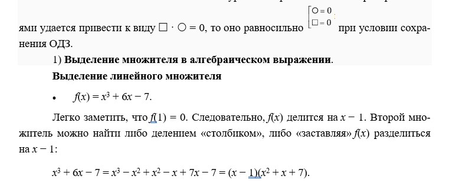
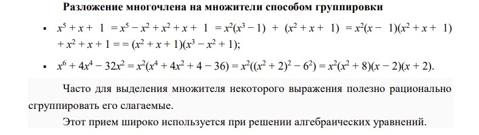
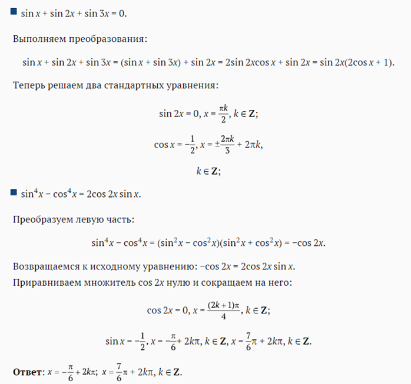
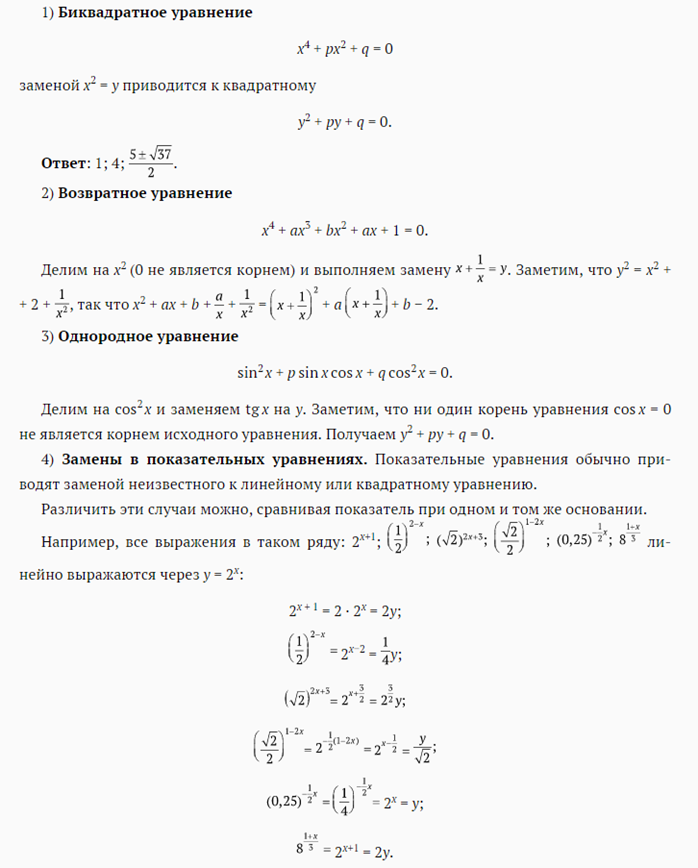
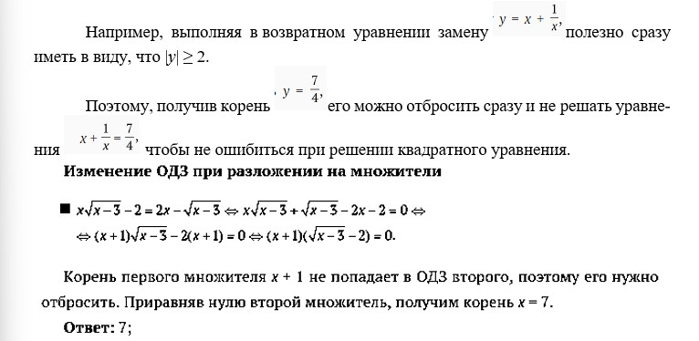
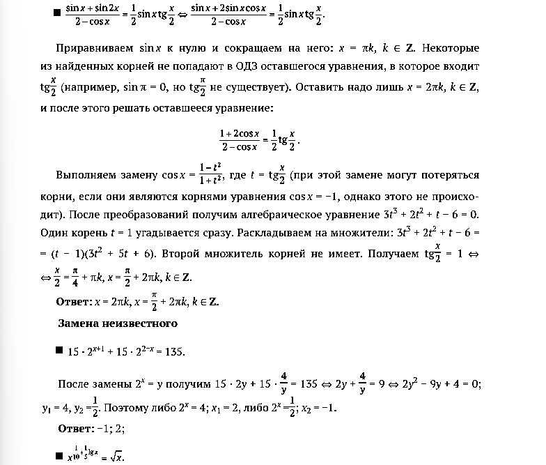
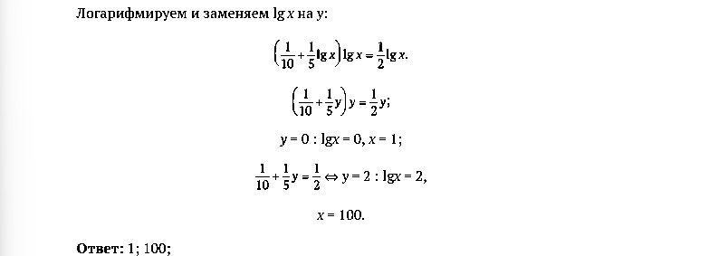
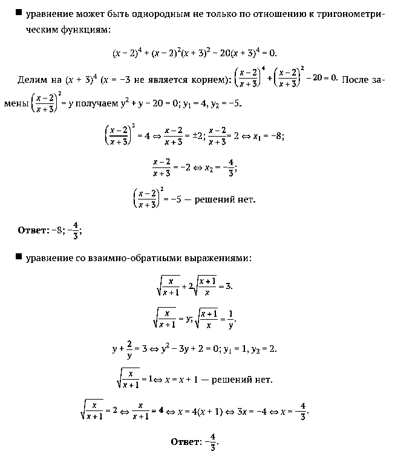
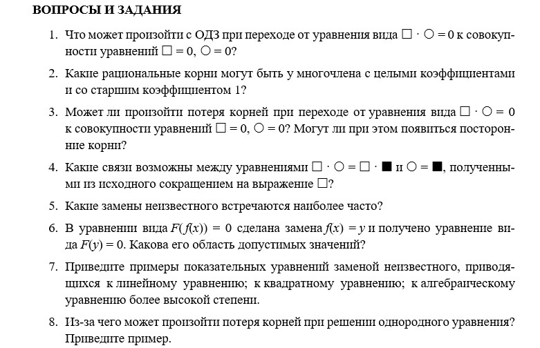

Формулы для решения уравнений

Как сводить уравнения к простейшим?

Разложение многочлена на множители основано на следующей простой теореме (ее часто называют теоремой Декарта, иначе ее можно получить как следствие известной теоремы Безу):
Если число a является корнем многочлена f(x), то f(x) делится на двучлен x − a, т. е. справедливо разложение на множители: f(x) = (x − a)g(x), где g(x) — многочлен, степень которого на единицу меньше степени f(x). Корень многочлена с целыми коэффициентами можно попытаться найти подбором
Нетрудно доказать, что целый корень многочлена с целыми коэффициентами и с коэффициентом, равным 1, при старшей степени обязательно является делителем свободного члена. Поэтому, перебирая делители свободного члена, можно узнать все целые корни
2)Способ группировки

В ходе решения тригонометрических уравнений часто удается выделить множители и тем самым упростить уравнение.
Решение тригонометрических уравнений разложением на множители




Замечание об области определения нового неизвестного.Обозначая в некотором уравнении с неизвестным x выражение f(x) за новое неизвестное y, приходим к уравнению с неизвестным y.
Область определения y совпадает с областью значений функции y = f(x).
На это можно не обращать никакого внимания при замене неизвестного, так как, решив уравнение относительно y и перейдя к уравнению f(x) = y для нахождения x, мы все равно столкнемся с этим вопросом — уравнение f(x) = y имеет корни в том и только в том случае, когда число y входит в область значений функции f
Например, выполняя в некотором показательном уравнении замену 2x = y, можно на этом этапе не учитывать, какие значения может принимать y.
Если уравнение относительно y имеет, например, корни y1 = 4, y2 = −4, то, решая уравнение 2x = −4, мы запишем, что у него нет корней.
В то же время отмечать (если это не сложно) область значений y полезно, так как это, во-первых, может упростить решение уравнения относительно y (в нашем примере, если искать только положительные решения, то это может оказаться проще, чем решать уравнение полностью).
Во-вторых, внимание к области значений может предостеречь от случайных ошибок.




